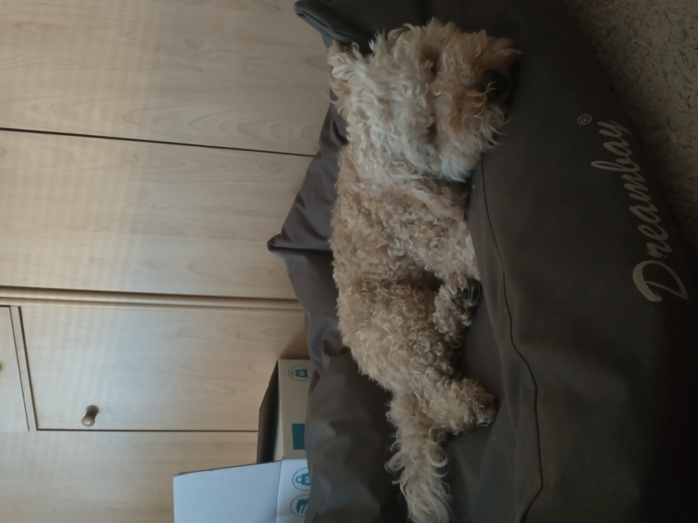

Terror hond of relaxte hond?
Bijna elke hondeneigenaar kent het wel, bij thuiskomst zijn er allerlei spullen vernield door je hond. Meestal uit verveling. Zelfs na een lange wandeling kan een hond toch nog niet uitgeput of rustig zijn. Fysiek moe maar mentaal nog absoluut niet.
Wat doe ik om mijn hond mentaal genoeg uit te dagen?
Ik heb zelf een hond die erg veel bewegiging en mentale uitdaging nodig heeft. Soms met een druk schema lukt het mij ook niet om bijvoorbeeld 3 uur per dag te wandelen en dan besteed ik de spaarzame tijd meer aan mentale uitdaging. Want 15 min denkwerk staat gelijk aan 1 uur beweging! Ik wil op deze site laten zien wat ik doe om mijn hond mentaal uit te dagen.
